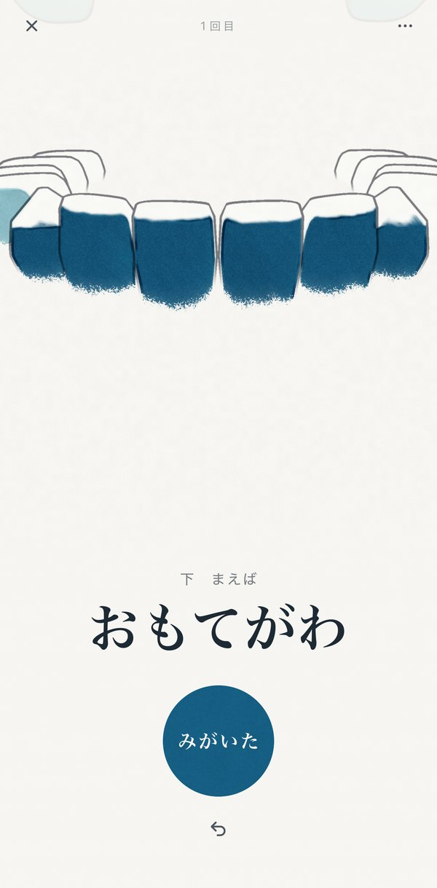
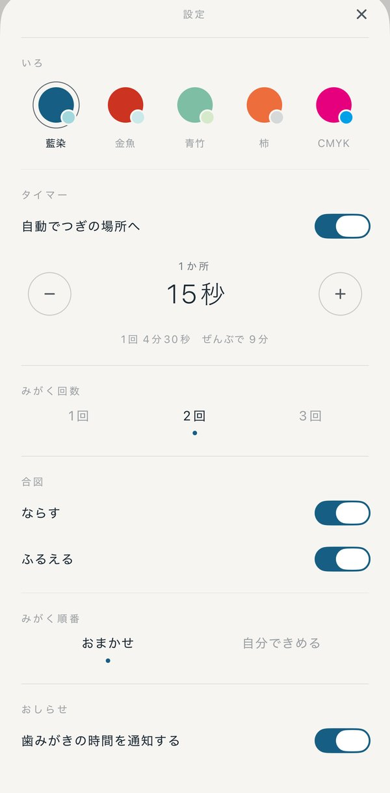
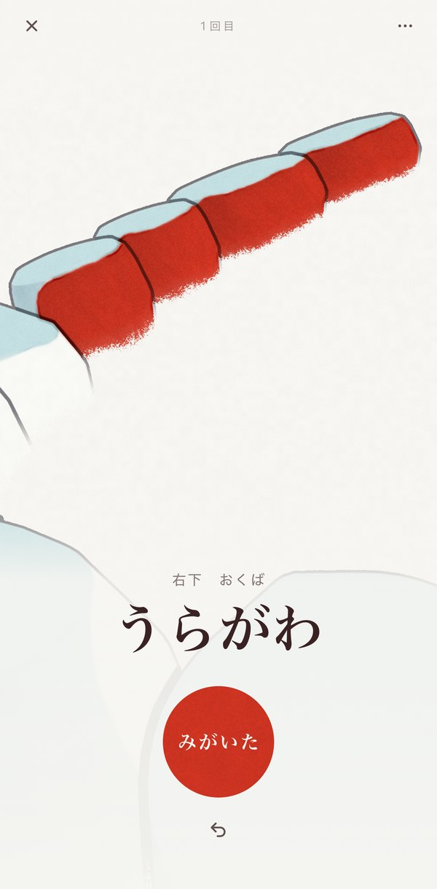
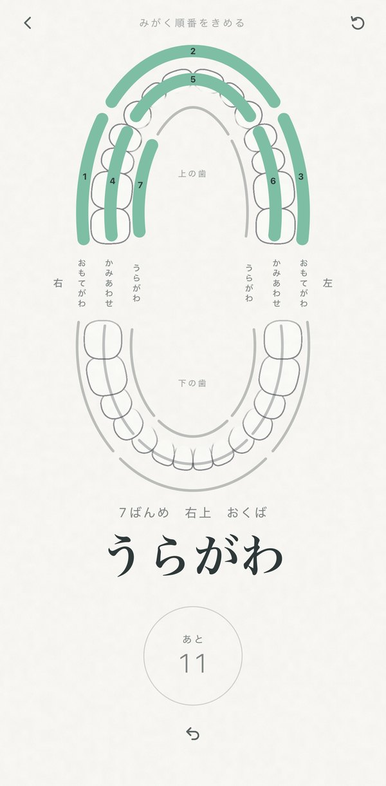
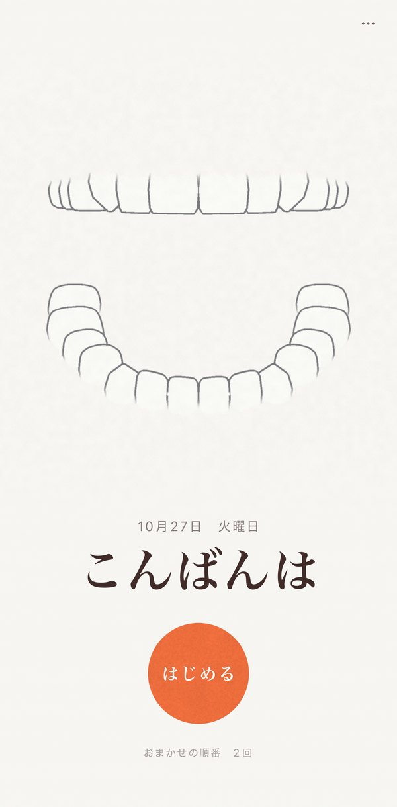
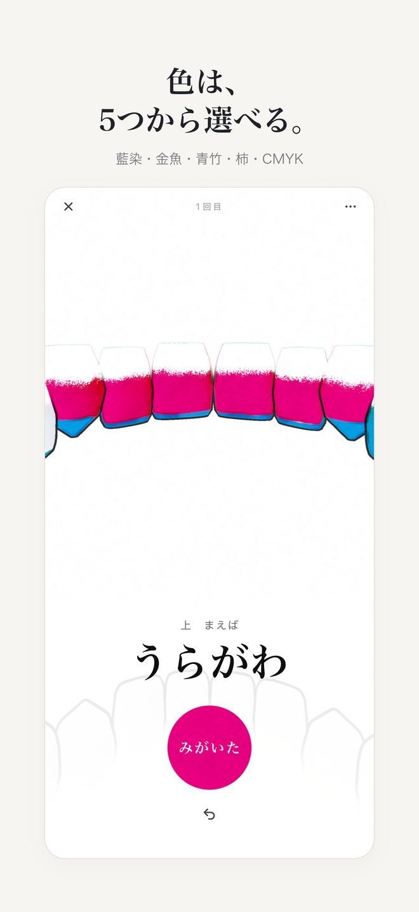

どこまでみがいたか、
もう忘れない。
歯みがきしながら、
どこまでみがいたかは
みがき直しがなくなり、

みがいたところに、
色がつく。
どこまでみがいたか、ひと目でわかります。考えごとをしていても、みがき直すことはありません。

1か所ずつ、
きまった時間でつぎへ。
上下の歯を18か所に分けて、いまみがく場所をひとつずつ示します。時間は1か所5〜60秒、みがく回数は1〜3回から選べます。

画面を見なくても、
大丈夫。
つぎの場所に進む時は、音と振動で知らせます。

みがく順番は、
自分でもきめられる。
おまかせなら、すぐに始められます。自分できめた順番は、あとから作り直すこともできます。

シンプルな使い心地。
ひらいて、みがいて、おしまい。

色は、
5つから選べる。
藍染・金魚・青竹・柿・CMYK。
アプリについて
- 対応機種
- iPhone（iOS 17 以降）
- 言語
- 日本語・English
- 価格
- 無料
- おしらせ
- 歯みがきの時間に、通知でお知らせします（通知を許可した場合）。